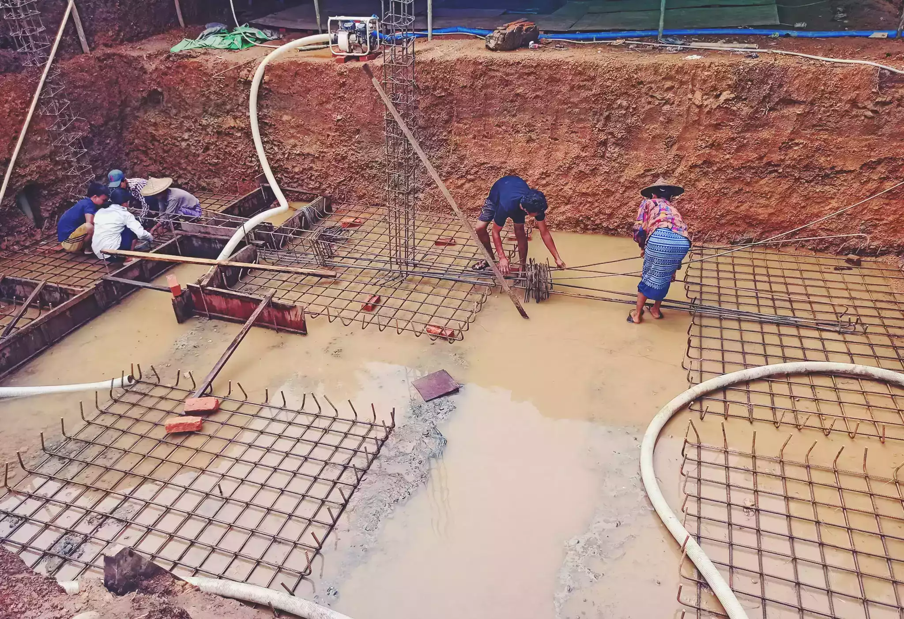
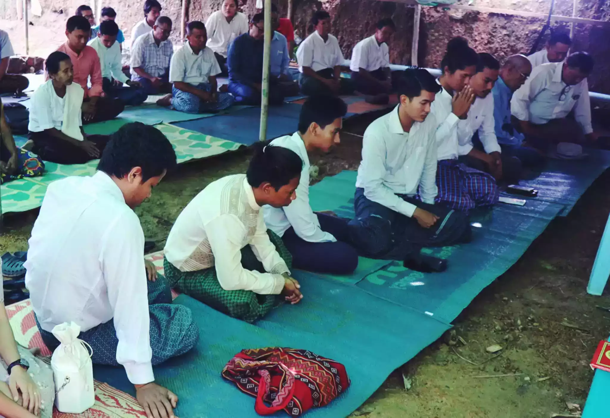
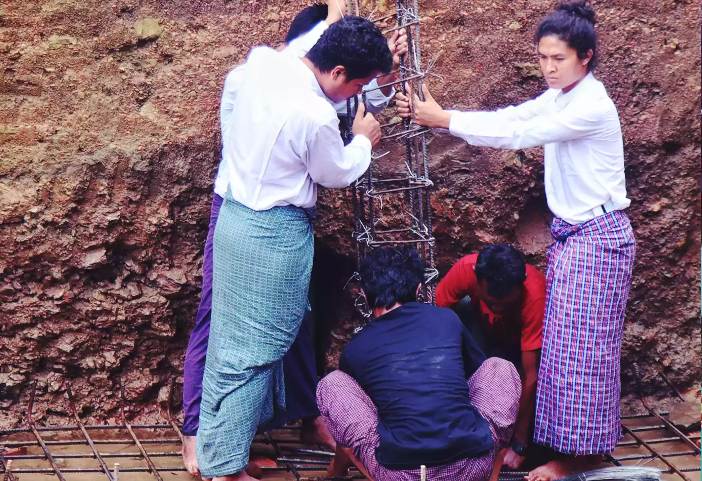
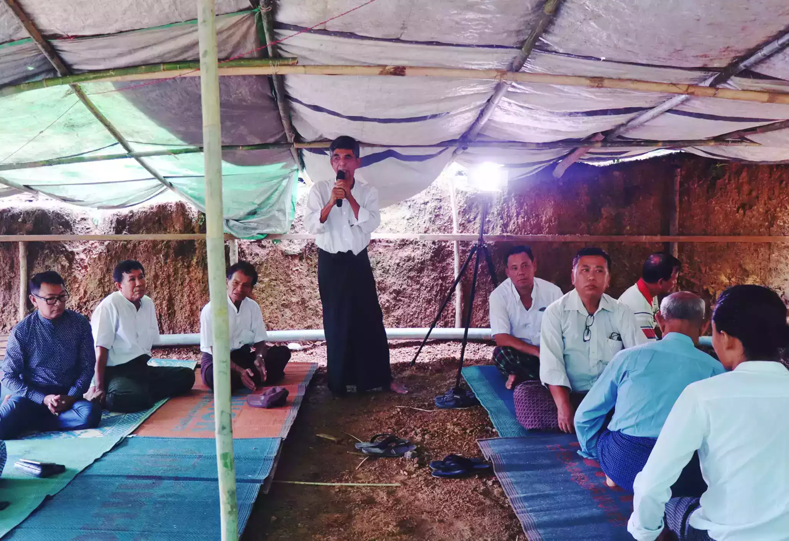
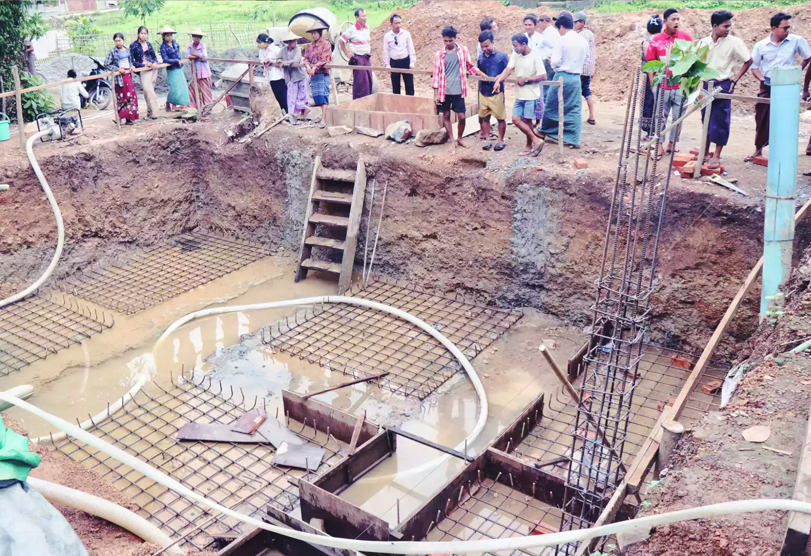
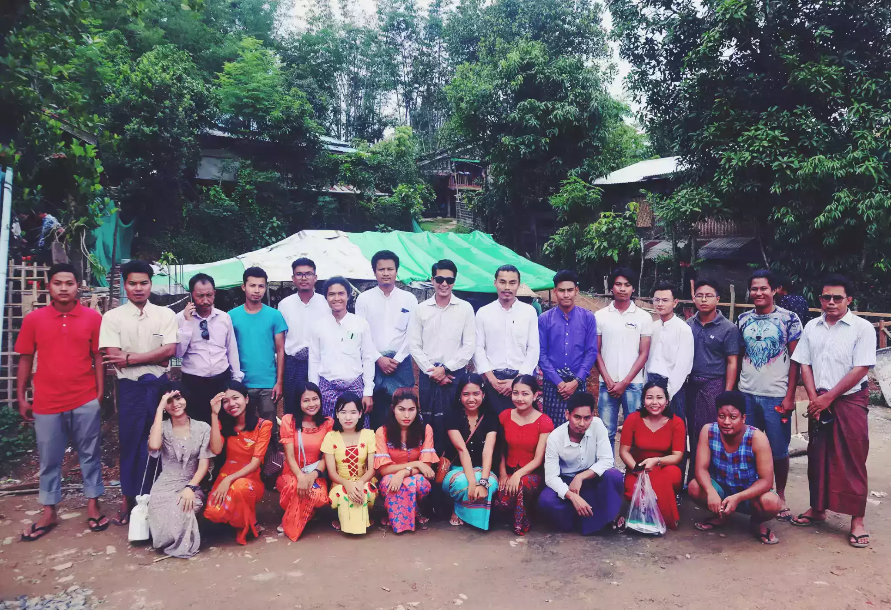

မြို့မစာကြည့်တိုက်ဖြစ်တေအတွက် မြောက်ဦးမြို့ပေါ်/ မြောက်ဦးလူငယ်များအားလုံးနန့်သက်ဆိုင်ရေလို့လည်းမှတ်ယူပါရေ။
လက်ဟိရခိုင်ပြည်၏လိုအပ်ချက်အရ လူငယ်မျိုးဆက်တိအများကြီးလိုအပ်နီပါသိရေ။ အဂုလက်ဟိတည်ဆောက်စ မြို့မစာကြည့်တိုက်ရေ စာကြည့်တိုက်တစ်ခုကနီ Youth Center တစ်ခုပေါ်ပေါက်လာဖို့ထိကို ရည်ရွယ်ထားပါရေ။ ရည်ရွယ်ထားရေအတိုင်းအကောင်အထည်ဖော်လားဖို့လည်းဟိပါရေ ယင်းအတွက်နန့် မြောက်ဦးရှိမြို့ပေါ်/နယ်လူငယ်တိနဲ့ တခြားစိတ်ဝင်စားရေ လူတိ့ ပူးပေါင်းဆောင်ရွက်ချင်ရေ ၊ ပါဝင်အားဖြည့်ချင်ရေလူတိအားလုံးကို မြောက်ဦးလူငယ်များအစည်းအရုံးကဂုဏ်ယူဝမ်းမြောက်စွာကြိုဆိုပါရေ။
၁ / ၆

မြောက်ဦးမြို့မစာကြည့်တိုက် အုတ်မြစ်ချ အခမ်းအနား
၂ / ၆

မြောက်ဦးလူငယ်များအစည်းအရုံး (မ.လ.စ)
၃ / ၆

Mrauk-U Youths Association (M.U.Y.A)
၄ / ၆

မြောက်ဦးမြို့မစာကြည့်တိုက် အုတ်မြစ်ချ အခမ်းအနား
၅ / ၆

မြောက်ဦးလူငယ်များအစည်းအရုံး (မ.လ.စ)
၆ / ၆

Mrauk-U Youths Association (M.U.Y.A)
မြောက်ဦးမြို့မာစာကြည့်တိုက်နဲ့ Youths Center ဖြစ်မြောက်ရေးအတွက် ဆက်သွယ်လှူဒါန်းနိုင်ပါရေ။
- ကျောက်စီနံရံတစ်ကွင် ( ၁၁ ပေ ပတ်လည် )
( ၁,၀၀၀,၀၀၀ ) ကျပ်
- ၉ လက်မအုတ်ရိုး
( ၃၀၀,၀၀၀ ) ကျပ်
- ၄ လက်မခွဲ အုတ်နံရံ
( ၂၀၀,၀၀၀ ) ကျပ်
- ၁၀ လက်မပတ်လည် RC တိုင်တလုံး
( ၃၅၀၀၀၀ ) ကျပ်
- ယက်မတစ်ချောင်း
( ၄၀၀,၀၀၀ )
- ဆလပ် ၁၀ ပေ ၁၃ ပေတစ်ကွင်
( ၉,၀၀၀,၀၀၀ ) ကျပ်
- ဘိလပ်မြေတစ်အိတ်
( ၁၅,၀၀၀ ) ကျပ်
- အုတ်တစ်ရာ
( ၁၅,၀၀၀ ) ကျပ်
- ကျောက်တစ်ကျင်း
( ၈၅,၀၀၀ ) ကျပ်
ဖုန်း